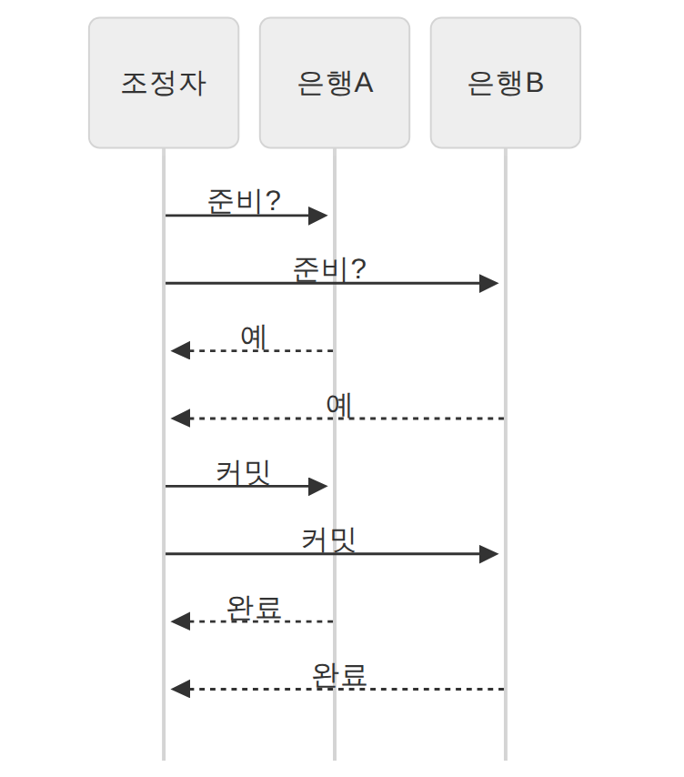

D053 · 적립금 이체 한 건의 일생 — 병행 제어 목적 · 로킹 단위와 2PL · 2PC · 고립화 수준 · 회복 다시 꿰기
B2 어제 D052는 집계 함수와 OLAP으로 숫자를 요약하며 끝났어요. 그런데 요약할 숫자가 처음부터 틀려 있으면 아무리 멋지게 돌려 봐도 소용이 없어요. 오늘은 길벗페이의 여행 적립금 이체 한 건을 따라가며, 그 숫자가 어떻게 끝까지 맞게 지켜지는지 봐요. 트랜잭션의 기본(ACID · 상태 · 로킹 · 회복)은 D031에서 이미 다뤘으니, 오늘은 그때 빠졌던 병행 제어의 목적 네 가지, 2PC, 고립화 수준을 덧대고 나머지를 새 사례로 다시 꿰어요. 트랜잭션 특성은 최근 20회 시험에 20회 모두, 병행 제어는 16회, 회복은 13회 나왔어요.
- 동시에 실행될 때 생기는 네 문제로 병행 제어가 왜 필요한지 말하고, 목적 네 가지와 가짜 목적(“공유 최소화”)을 구별한다
- 병행 제어 기법 네 가지를 구별하고, 로킹 단위 크기와 락 수 · 오버헤드 · 병행성의 방향을 뒤집은 선지를 걸러 낸다
- 2PL(직렬성을 위한 로킹 규약)과 2PC(분산 트랜잭션의 원자적 커밋 규약)를 ‘무엇을 보장하나’로 가른다
- 고립화 수준 네 단계와 더티 리드 · 반복 불가능 읽기 · 팬텀 리드를 짝짓고, 회복 기법(지연 · 즉시 갱신, 검사점, 그림자 페이징)을 다시 구별한다
0. 오늘의 지도 — 이체 한 건이 넘는 다섯 고비
지민 님이 여행 적립금 300원을 하늘 님에게 보낸다고 해 봐요. 데이터베이스 안에서는 “지민 −300”과 “하늘 +300”이라는 두 번의 UPDATE가 일어나요. 이 두 줄이 한 묶음, 즉 하나의 트랜잭션이에요. 한 줄만 반영되면 돈이 사라지거나 생겨나니, 둘은 함께 성공하거나 함께 취소돼야 해요.
문제는 이 이체가 혼자 돌지 않는다는 점이에요. 같은 시각에 다른 사람이 지민 님 계좌를 건드리고, 잔액 화면이 그 계좌를 읽고, 가끔은 서버가 꺼져요. 아래 지도의 다섯 고비가 바로 그 상황이고, 각 고비를 지키는 ACID 성질이 오른쪽에 적혀 있어요.
결과물 → 다음 장면: 이체라는 묶음 하나를 만들었어요. 이제 이 묶음이 다른 묶음과 동시에 돌 때 무슨 일이 생기는지 봐요.
1. 장면 1 — 같은 계좌를 둘이 만질 때 (병행 제어) 기출 16회
정의: 병행 제어 개념부터 잡아요. 병행 제어(Concurrency Control)는 다수의 트랜잭션이 같은 데이터에 동시에 접근할 때 데이터베이스의 일관성이 깨지지 않도록 실행 순서와 접근을 통제하는 기법이에요. 왜 필요할까요? 가장 안전한 방법은 트랜잭션을 줄 세워 하나씩만 돌리는 거예요. 하지만 그러면 결제 하나가 끝날 때까지 다른 모든 사용자가 기다려야 하니, 서비스는 금방 멈춘 것처럼 느려져요. 그래서 동시에 돌리되, 결과만은 줄 세워 돌린 것과 같게 만드는 규칙이 필요해요.
규칙이 없으면 어떤 사고가 나는지 이체 장면으로 보면 바로 와닿아요. 지민 님 계좌 1000원에 대해 두 친구가 동시에 “300원 선물하기”를 눌렀다고 해 봐요. 두 트랜잭션 T1과 T2가 모두 잔액 1000을 읽고, 각자 1000 − 300 = 700을 계산해 써 넣어요. 장부 한 줄에 두 직원이 동시에 볼펜을 대고 “내가 마지막에 썼으니 내 글씨가 정답”이라고 우기는 상황이죠. 최종 잔액은 400이어야 하는데 700이 남아요.
이렇게 동시에 실행하다 생기는 사고는 시험 용어로 네 가지예요. 하나씩 이체 장면으로 바꿔 보면 아래 표와 같아요. 핵심은 모두 “다른 트랜잭션의 중간 상태가 새어 나가거나 덮어써졌다”는 공통점이에요.
| 문제 | 정의 | 이체 장면 |
|---|---|---|
| 갱신 분실 (Lost Update) | 두 트랜잭션이 같은 데이터를 갱신해, 한쪽의 갱신이 다른 쪽에 덮어써져 사라짐 | 두 선물이 모두 1000 기준으로 700을 써서 300이 증발 |
| 모순성 (Inconsistency) | 두 트랜잭션이 엇갈려 실행되어 데이터가 서로 맞지 않는 상태가 됨 | 이체 중간(지민 −300 직후, 하늘 +300 전)에 전체 적립금 합계를 내면 300이 모자람 |
| 연쇄 복귀 (Cascading Rollback) | 한 트랜잭션이 취소될 때, 그 결과를 읽은 다른 트랜잭션까지 줄줄이 취소돼야 함 | 이체가 취소됐는데 그사이 하늘 님이 받은 300으로 결제까지 해 버림 |
| 현황 파악 오류 (비완료 의존성) | 아직 끝나지 않은(커밋 안 된) 트랜잭션의 중간 결과를 다른 트랜잭션이 참조해 오류가 남 | 취소될 이체의 700을 잔액 화면이 보여 줌 (장면 5의 더티 리드와 같은 뿌리) |
그림 3. 병행 수행 문제 네 가지. 장면 5의 고립화 수준은 이 사고 중 “읽는 쪽” 사고를 어디까지 허용할지 고르는 장치예요.
acct 표(지민 1000 · 하늘 500)와 회복 연습용 tx_log 표예요. 상자마다 처음 상태에서 새로 시작해요. 한 화면에 세션이 하나뿐이라 “동시에 두 명”은 흉내만 낼 수 있어서, 두 사람이 이미 읽어 둔 값을 차례로 쓰는 식으로 재현해요.첫 결과는 700, 두 번째는 400이에요. 차이는 “읽기 → 계산 → 쓰기”가 한 덩어리냐예요. bal = bal - 300은 DB가 그 행에 자물쇠를 걸고 그 순간의 최신 값으로 계산하니 덩어리가 깨지지 않아요. 앱에서 읽어 둔 옛 값으로 덮어쓰면 덩어리가 깨져요. 병행 제어는 결국 이 덩어리를 지키는 기술이에요.
그럼 병행 제어는 무엇을 노릴까요? 책은 목적 네 가지를 꼽아요. 데이터베이스를 여럿이 함께 쓰는 공유도를 최대화하고, CPU · 메모리 · 디스크가 놀지 않게 시스템 활용도를 최대화하고, 그러면서도 데이터의 일관성을 유지하고, 사용자가 기다리는 응답 시간을 최소화하는 것이에요. 앞의 둘은 “더 많이, 더 바쁘게”, 셋째는 “그래도 틀리지 않게”, 넷째는 “빨리”예요.
그림 4. 병행 제어 목적. 진짜 목적은 “최대 · 최대 · 유지 · 최소” 네 방향이에요.
결과물 → 다음 장면: 무엇을 막아야 하는지(네 문제)와 무엇을 노리는지(네 목적)가 정해졌어요. 가장 흔한 수단인 자물쇠부터 봐요.
2. 장면 2 — 자물쇠를 거는 법: 로킹 · 로킹 단위 · 2PL 기출 14회
로킹과 두 가지 락
정의: 로킹(Locking)은 트랜잭션이 데이터를 사용하기 전에 잠금(lock)을 얻고 다 쓴 뒤 풀어서(unlock), 잠금을 가진 동안 다른 트랜잭션이 그 데이터를 건드리지 못하게 하는 병행 제어 기법이에요. 장면 1의 갱신 분실도 T1이 지민 계좌에 자물쇠를 걸었다면 T2는 T1이 끝날 때까지 기다렸다가 최신 값 700을 읽었을 거예요. 순서가 강제되니 결과가 줄 세운 것과 같아져요.
자물쇠를 한 종류만 쓰면 읽기만 하는 사람끼리도 서로 기다려야 해서 손해예요. 그래서 락은 두 가지로 나눠요. 공유 락(Shared Lock, S)은 읽기용이라 다른 트랜잭션도 같은 데이터에 공유 락을 함께 걸 수 있어요. 배타 락(Exclusive Lock, X)은 쓰기용이라 한 트랜잭션이 독점하고, 걸려 있는 동안 다른 어떤 락도 걸 수 없어요. 도서관 책을 여럿이 같이 들여다보는 건 괜찮지만, 누가 그 책에 밑줄을 긋는 동안에는 아무도 못 보는 것과 같아요.
| 이미 걸린 락 \ 새로 요청 | 공유 락 (읽기) | 배타 락 (쓰기) |
|---|---|---|
| 공유 락 | 허용 | 대기 |
| 배타 락 | 대기 | 대기 |
그림 5. 락 호환표. 허용되는 칸은 “읽기 + 읽기” 딱 하나예요.
로킹 단위
정의: 로킹 단위(Locking Granularity)는 한 번에 자물쇠를 거는 데이터의 크기예요. 데이터베이스 전체, 테이블(파일), 행(레코드), 열(필드)까지 어느 수준이든 단위가 될 수 있어요. 건물 전체를 잠그는 관리인은 열쇠 하나로 편하지만 입주민 줄이 길고, 방마다 잠그면 줄은 짧아지지만 관리인 열쇠 꾸러미가 무거워지는 것과 같아요.
그래서 단위가 크면 걸어야 할 락의 수가 적어 관리 오버헤드가 작고 제어가 단순하지만, 한 번에 막는 범위가 넓어 동시에 돌 수 있는 트랜잭션이 줄어 병행성이 낮아져요. 단위가 작으면 정반대로 락 수가 많아 오버헤드가 커지지만, 서로 다른 행을 만지는 트랜잭션은 서로 막지 않으니 병행성(공유도)이 높아져요. 실제 DBMS는 대부분 행 단위 락을 기본으로 쓰고, 필요할 때만 테이블 단위 락을 걸어요.
2단계 로킹 규약 (2PL)
정의: 2단계 로킹 규약(Two-Phase Locking, 2PL)은 각 트랜잭션이 락을 얻기만 하는 확장 단계와 락을 풀기만 하는 축소 단계를 나누어, 락을 하나라도 풀기 시작한 뒤에는 새 락을 얻지 않는 규약이에요. 왜 필요할까요? 락을 걸기만 해서는 부족해요. 지민 계좌 락을 잠깐 풀었다가 하늘 계좌 락을 다시 얻는 사이에 다른 트랜잭션이 끼어들면, 이체 중간 상태가 새어 나가요.
2PL을 지키면 모든 트랜잭션이 가장 많은 락을 쥔 순간(락 포인트)을 기준으로 줄 선 것처럼 실행돼, 결과가 어떤 직렬 순서로 돌린 것과 같다는 직렬 가능성(Serializability)이 보장돼요. 금고 열쇠 사슬에 비유하면 “필요한 열쇠를 다 모은 다음에야 하나씩 돌려줄 수 있고, 돌려주기 시작하면 다시 빌릴 수 없다”는 약속이에요. 대신 대가가 있어요. 두 트랜잭션이 서로 상대가 쥔 열쇠를 기다리면 둘 다 영원히 멈추는 교착상태(Deadlock)는 2PL이 막아 주지 못해요. 실제 DBMS는 교착을 감지하면 한쪽 트랜잭션을 중단시켜 풀어요(교착의 조건과 해결은 3과목 운영체제에서 자세히 다뤄요).
아래 애니메이션으로 락이 실제로 순서를 만드는 모습과, 2PL을 지켜도 교착이 생기는 모습을 차례로 봐요.
| 시각 | T1 | T2 | 지민 행의 락 |
|---|---|---|---|
| 1 | 배타 락 요청 → 획득 | – | T1 배타 |
① T1이 지민 행에 배타 락을 얻어요. 확장 단계예요.
| 시각 | T1 | T2 | 지민 행의 락 |
|---|---|---|---|
| 1 | 배타 락 획득 | – | T1 배타 |
| 2 | 읽기 1000 · 쓰기 700 | 배타 락 요청 → 대기 | T1 배타 (T2 대기) |
② T2도 같은 행을 원하지만 배타 락끼리는 함께 걸 수 없어서 기다려요.
| 시각 | T1 | T2 | 지민 행의 락 |
|---|---|---|---|
| 3 | COMMIT · 락 해제 | 대기 | 없음 |
③ T1이 커밋하며 락을 놓아요. 축소 단계예요.
| 시각 | T1 | T2 | 지민 행의 락 |
|---|---|---|---|
| 4 | (종료) | 락 획득 · 읽기 700 · 쓰기 400 | T2 배타 |
④ T2는 이제 최신 값 700을 읽고 400을 써요. 갱신 분실이 사라졌어요.
| 트랜잭션 | 쥐고 있는 락 | 원하는 락 |
|---|---|---|
| T1 (지민 → 하늘 이체) | 지민 행 배타 | 하늘 행 |
| T2 (하늘 → 지민 이체) | 하늘 행 배타 | 지민 행 |
⑤ 다른 날, 서로 반대 방향 이체 둘이 각자 첫 계좌의 락을 쥐었어요.
| 트랜잭션 | 상태 |
|---|---|
| T1 | 하늘 행을 기다림 |
| T2 | 지민 행을 기다림 |
| DBMS | 교착 감지 → 한쪽을 롤백 |
⑥ 둘 다 확장 단계라 2PL을 어기지 않았는데도 서로를 영원히 기다려요. 이게 교착상태이고, DBMS가 한쪽을 중단시켜 풀어요.
결과물 → 다음 장면: 자물쇠로 순서를 강제하는 법을 알았어요. 그런데 기다림은 느리고 교착까지 부르죠. 자물쇠를 쓰지 않는 다른 길을 봐요.
3. 장면 3 — 자물쇠 말고 다른 길: 타임스탬프 · 낙관적 검증 · MVCC
정의: 타임스탬프 순서 기법(Timestamp Ordering)은 트랜잭션이 시작하기 전에 시각표(타임스탬프)를 붙여 주고, 데이터 접근도 그 시각 순서대로만 허용하는 기법이에요. 순서를 미리 정해 두니 “누가 먼저냐”로 다툴 일이 없어요. 순서를 어기는 접근이 생기면 그 트랜잭션을 취소하고 새 시각으로 다시 시작시킬 뿐 기다리지 않으므로, 로킹과 달리 교착상태가 생기지 않아요.
정의: 낙관적 검증 기법(Optimistic Validation)은 “충돌은 드물 것”이라고 낙관하고, 실행 중에는 아무 검사 없이 일하다가 끝날 때 한 번 충돌 여부를 검사하는 기법이에요. 흐름은 판독(읽기) → 확인(검증) → 기록(쓰기) 세 단계로, 검증에서 문제가 없을 때만 결과를 DB에 반영하고 문제가 있으면 처음부터 다시 해요. 일단 다 풀고 제출할 때 검사받는 학생처럼, 대부분 통과하는 환경(읽기가 많고 충돌이 적은 서비스)에서 빛나요.
정의: 다중 버전 동시성 제어(MVCC, Multi-Version Concurrency Control)는 데이터를 고칠 때 덮어쓰지 않고 새 버전을 하나 더 만들어, 읽는 트랜잭션은 자기 시점에 맞는 버전을 골라 읽게 하는 기법이에요. 책은 이를 트랜잭션의 타임스탬프와 데이터 버전의 타임스탬프를 비교해 직렬 가능성이 보장되는 버전을 고르는 방식으로 설명해요. 수정본이 새로 나와도 내가 이미 받은 인쇄본은 그대로인 것과 같아서, 읽기가 쓰기를 기다리지 않고 쓰기도 읽기를 기다리지 않아요. PostgreSQL 같은 현대 DBMS가 기본으로 쓰는 방식이에요.
병행 제어 기법 종류 네 가지를 한 장에 놓으면 아래와 같아요. 시험은 “병행 제어 기법이 아닌 것”으로 시분할을 자주 끼워 넣어요. 시분할은 CPU 시간을 잘게 나눠 여러 프로그램이 번갈아 쓰는 운영체제 개념이지 트랜잭션 충돌을 막는 기법이 아니에요.
| 기법 | 충돌을 다루는 시점 | 기다림 · 교착 |
|---|---|---|
| 로킹 | 접근 전 (자물쇠) | 기다림 있음 · 교착 가능 |
| 타임스탬프 순서 | 시작 전 (순서 부여) | 기다림 없음(취소 후 재시작) · 교착 없음 |
| 낙관적 검증 | 끝날 때 (검증) | 실행 중 검사 없음 · 실패 시 재실행 |
| 다중 버전 (MVCC) | 쓸 때 새 버전 | 읽기 · 쓰기 서로 안 막음 |
결과물 → 다음 장면: 한 DB 안에서 충돌을 다루는 네 길을 봤어요. 그런데 하늘 님 계좌가 다른 은행에 있다면? DB가 둘로 나뉘면 새로운 약속이 필요해요.
4. 장면 4 — 은행이 둘이면: 2PC와 2PL 가르기
정의: 2단계 커밋(Two-Phase Commit, 2PC)은 분산 데이터베이스에서 하나의 트랜잭션이 여러 사이트에 걸쳐 있을 때, 모든 사이트가 커밋하거나 모든 사이트가 롤백하도록 보장해 원자성과 일관성을 지키는 규약이에요. 왜 필요할까요? 지민 님 계좌는 은행 A에, 하늘 님 계좌는 은행 B에 있다고 해 봐요. A에서 −300은 커밋됐는데 B가 그 순간 장애로 +300을 못 했다면 300원이 허공으로 사라져요. 각 DB가 혼자 판단해 커밋하면 이런 반쪽 커밋을 막을 수 없어요.
그래서 전체를 지휘하는 조정자(코디네이터)가 두 단계로 진행해요. 1단계 준비 단계에서 조정자가 모든 참여 DB에 “커밋할 준비가 됐나요?”라고 묻고, 각 DB는 자기 몫의 변경을 디스크(로그)에 안전하게 적어 둔 뒤 “예” 또는 “아니오”로 투표해요. 2단계 커밋 단계에서 전원이 “예”였다면 조정자가 커밋을 지시하고, 하나라도 “아니오”였거나 응답이 없으면 모두에게 롤백을 지시해요. 송금 전에 두 은행에 “준비됐나요?” 확인 전화를 돌리고, 한 곳이라도 머뭇거리면 둘 다 취소하는 셈이에요.

PostgreSQL에는 이 1단계를 위한 명령 PREPARE TRANSACTION이 있어요. 이 명령을 받은 트랜잭션은 상태를 디스크에 완전히 저장해 두고, 나중에 외부 트랜잭션 관리자가 보내는 COMMIT PREPARED 또는 ROLLBACK PREPARED를 기다려요. 이름 자체가 “준비 → 커밋”의 두 단계를 보여 줘요. 대가도 분명해요. 참여자 사이에 메시지가 여러 번 오가야 하니 느리고 구현이 복잡하며, 준비를 마친 참여자는 조정자의 최종 지시가 올 때까지 결과를 확정하지 못하고 기다려야 해요.
| 참여자 | 상태 |
|---|---|
| 조정자 | “커밋 준비됐나요?” 전송 |
| 은행 A | 지민 −300 실행 완료 |
| 은행 B | 하늘 +300 실행 완료 |
① 1단계 시작. 조정자가 두 은행에 준비 여부를 물어요.
| 참여자 | 상태 |
|---|---|
| 은행 A | 변경을 로그에 기록 → “예” |
| 은행 B | 변경을 로그에 기록 → “예” |
② 각 은행은 장애가 나도 커밋할 수 있게 변경을 디스크에 적어 두고 투표해요. 이제 혼자서는 결정하지 않고 지시를 기다려요.
| 참여자 | 상태 |
|---|---|
| 조정자 | 전원 “예” → 커밋 지시 |
| 은행 A | 커밋 |
| 은행 B | 커밋 |
③ 2단계. 모두 “예”라서 커밋을 지시하고, 두 곳이 함께 확정돼요.
| 참여자 | 상태 |
|---|---|
| 은행 A | “예” |
| 은행 B | 한도 초과 → “아니오” |
④ 다른 날. 은행 B가 준비 단계에서 “아니오”라고 답했어요.
| 참여자 | 상태 |
|---|---|
| 조정자 | 롤백 지시 |
| 은행 A | 지민 −300 취소 |
| 은행 B | 취소 |
⑤ 하나라도 “아니오”면 전원 롤백이에요. 은행 A만 커밋되는 반쪽 이체는 생기지 않아요.
이제 이름이 닮은 두 규약을 나란히 놓아 봐요. 하나는 순서(직렬성)를, 하나는 전부 아니면 전무(분산 원자성)를 지켜요.
| 가르는 질문 | 2PL (2단계 로킹) | 2PC (2단계 커밋) |
|---|---|---|
| 무엇을 보장하나 | 직렬 가능성 (동시 실행 결과 = 줄 세운 결과) | 분산 트랜잭션의 원자성 (모든 사이트 함께 커밋 · 롤백) |
| 두 단계의 이름 | 확장 단계 → 축소 단계 | 준비 단계 → 커밋 단계 |
| 어디서 쓰나 | 한 DBMS 안의 락 관리 | 여러 DB · 사이트에 걸친 커밋 |
| 못 하는 것 · 대가 | 교착상태를 막지 못함 | 느림 · 복잡 · 참여자가 지시를 기다림 |
그림 11. 2PL vs 2PC. 단계 이름을 바꿔 끼우는 선지가 단골 함정이에요.
내일 D054의 분산 데이터베이스 투명성 가운데 장애 투명성(일부 사이트에 장애가 나도 트랜잭션의 원자성이 지켜짐)이 바로 이 2PC로 구현돼요. 오늘은 이름과 두 단계만 단단히 잡아 둬요.
결과물 → 다음 장면: 쓰는 쪽의 약속(락 · 2PL · 2PC)을 정리했어요. 이제 “읽는 쪽”이 남의 작업을 얼마나 엄격하게 피할지 정하는 고립화 수준을 봐요.
5. 장면 5 — 읽는 쪽의 사정: 고립화 수준
정의: 고립화 수준(Isolation Level, 격리 수준)은 다른 트랜잭션이 데이터 무결성을 해치지 않도록 잠금(또는 스냅샷)을 얼마나 엄격하게 적용할지 정하는 단계예요. 왜 단계를 나눌까요? 모든 읽기를 완벽히 격리하면 안전하지만, 잔액 화면 하나를 띄우려고 진행 중인 이체를 전부 기다리게 되니 느려요. 그래서 “이 화면은 약간의 어긋남을 참을 수 있다”면 낮은 수준을, “정산은 한 치도 틀리면 안 된다”면 높은 수준을 골라 써요. 남의 책상 위 메모를 얼마나 훔쳐볼 수 있게 할지 정하는 사내 규정 같은 거예요.
수준을 나누는 기준은 세 가지 이상 현상이에요. 더티 리드(Dirty Read)는 아직 커밋되지 않은 다른 트랜잭션의 변경을 읽는 것이에요. 그 트랜잭션이 롤백하면 나는 존재한 적 없는 값을 본 셈이죠(장면 1의 현황 파악 오류와 같은 뿌리). 반복 불가능 읽기(Non-Repeatable Read)는 같은 행을 두 번 읽었는데 그사이 다른 트랜잭션이 그 행을 고쳐 커밋해서 값이 달라지는 것이에요. 팬텀 리드(Phantom Read)는 같은 조건으로 두 번 조회했는데 그사이 다른 트랜잭션이 조건에 맞는 행을 추가하거나 지워 커밋해서 결과 행의 개수가 달라지는 것이에요. 유령(phantom)처럼 없던 행이 나타나서 붙은 이름이에요.
SQL 표준은 이 세 현상을 몇 개까지 허용하느냐로 네 수준을 정의해요. READ UNCOMMITTED는 셋 다 허용해요. READ COMMITTED는 커밋된 값만 읽게 해 더티 리드를 막아요. REPEATABLE READ는 한 번 읽은 행이 끝까지 같게 보여 반복 불가능 읽기까지 막지만, 표준상 팬텀은 허용해요. SERIALIZABLE은 가장 엄격해서, 동시에 실행한 결과가 트랜잭션을 어떤 순서로 하나씩 실행한 결과와 같도록 보장하니 셋 다 막아요.
표준은 “최소한 이것은 막아라”라는 하한선이라, DBMS가 더 엄격하게 구현해도 돼요. PostgreSQL은 READ UNCOMMITTED를 요청해도 READ COMMITTED처럼 동작하고(실제로는 세 수준만 구현), REPEATABLE READ에서도 팬텀 리드를 막아요. 기본값은 READ COMMITTED예요. DBMS마다 기본 수준과 실제 보장 범위가 다르니, 시험에서는 그림 11의 표준 격자로 답하고 실무에서는 쓰는 DBMS의 문서를 확인해요.
| 이상 현상 | 상태 |
|---|---|
| 더티 리드 | 생김 |
| 반복 불가능 읽기 | 생김 |
| 팬텀 리드 | 생김 |
① READ UNCOMMITTED. 커밋 안 된 값까지 보여요. 세 현상이 모두 생길 수 있어요.
| 이상 현상 | 상태 |
|---|---|
| 더티 리드 | 막음 |
| 반복 불가능 읽기 | 생김 |
| 팬텀 리드 | 생김 |
② READ COMMITTED. 커밋된 값만 읽어서 더티 리드가 사라져요. PostgreSQL의 기본값이에요.
| 이상 현상 | 상태 |
|---|---|
| 더티 리드 | 막음 |
| 반복 불가능 읽기 | 막음 |
| 팬텀 리드 | 생김 |
③ REPEATABLE READ. 한 번 읽은 행은 끝까지 같게 보여요. 표준상 팬텀은 남아요.
| 이상 현상 | 상태 |
|---|---|
| 더티 리드 | 막음 |
| 반복 불가능 읽기 | 막음 |
| 팬텀 리드 | 막음 |
④ SERIALIZABLE. 결과가 하나씩 차례로 실행한 것과 같아져 세 현상이 모두 사라져요. 대신 동시에 돌 수 있는 일이 가장 적어요.
| DBMS 사정 | 내용 |
|---|---|
| PostgreSQL REPEATABLE READ | 스냅샷을 쓰므로 팬텀 리드도 막음 |
| PostgreSQL READ UNCOMMITTED | READ COMMITTED처럼 동작 |
⑤ 표준은 하한선이라 DBMS가 더 엄격해도 돼요. 시험은 표준 격자로 답해요.
기본값은 read committed, 바꾼 뒤에는 serializable이 나와요. SET TRANSACTION은 그 트랜잭션 하나에만 적용돼요. 세 이상 현상 자체는 세션이 둘 이상 있어야 재현되니, 이 화면에서는 이름과 문법만 확인하고 현상은 위 그림과 애니메이션으로 봐요.
고립화 수준을 정했으면 장면 1의 ACID 성질과 다시 이어 봐요. 고립화 수준은 격리성(Isolation)을 얼마나 엄격하게 지킬지 고르는 손잡이예요. 격리성의 정의는 “실행 중인 트랜잭션의 중간 결과에 다른 트랜잭션이 끼어들 수 없다”이고, 시험에서 자주 짝지어 헷갈리게 만드는 일관성(Consistency)은 “트랜잭션 실행 전후에 데이터베이스가 무결성 제약을 지키는 일관된 상태로 남는다”예요. 끼어듦을 말하면 격리성, 전후 상태를 말하면 일관성이에요.
결과물 → 다음 장면: 정상 운영 중의 사고는 모두 정리했어요. 마지막 고비는 서버가 갑자기 꺼지는 장애예요.
6. 장면 6 — 서버가 꺼졌다 켜지면: 회복 다시 꿰기 기출 13회
정의: 회복(Recovery)은 트랜잭션 · 시스템 · 디스크 장애로 데이터베이스가 손상됐을 때, 손상 이전의 정상 상태로 복구하는 작업이에요. 회복은 ACID 중 두 성질을 지켜요. 커밋 못 한 이체를 흔적 없이 지우는 건 원자성, 커밋한 이체를 장애 뒤에도 살려 내는 건 지속성이에요. 지민 님 화면에 “이체 완료”가 떴는데 서버 재시작 후 사라져 있다면, 그건 회복 기법이 일을 안 한 거예요.
되돌리려면 무엇이 바뀌었는지 기록이 있어야 해요. 로그(Log)는 트랜잭션이 데이터를 바꿀 때마다 “어떤 트랜잭션이, 어느 데이터를, 바꾸기 전 값에서 바꾼 뒤 값으로” 고쳤는지 순서대로 적은 기록이에요. 중요한 규칙은 로그를 먼저 쓴다는 거예요(WAL, Write-Ahead Logging). 데이터 파일을 고치기 전에 그 변경을 설명하는 로그가 먼저 안전한 저장소에 기록돼야, 데이터 파일 반영 도중 꺼져도 로그를 보고 되살릴 수 있어요. 계산(DB 반영)보다 영수증(로그)부터 끊는 가게라고 생각하면 돼요.
로그를 가지고 하는 일은 두 가지예요. REDO(재실행)는 커밋까지 끝났지만 데이터 파일에는 아직 반영되지 않았을 수 있는 변경을 로그의 “바꾼 뒤 값”으로 다시 반영하는 것이에요. UNDO(취소)는 커밋하지 못한 트랜잭션이 이미 DB에 남긴 변경을 로그의 “바꾸기 전 값”으로 되돌리는 것이에요.
지연 갱신 · 즉시 갱신 · 그림자 페이징
정의: 지연 갱신 기법(Deferred Update)은 트랜잭션이 부분 완료(마지막 연산까지 실행)될 때까지 변경을 로그에만 적고 DB에는 반영하지 않다가, 커밋 시점에 한꺼번에 반영하는 기법이에요. 커밋 전에는 DB에 흔적이 없으니 장애가 나도 되돌릴 것이 없어서 UNDO가 필요 없고 REDO만 있으면 돼요. 즉시 갱신 기법(Immediate Update)은 트랜잭션 실행 중에 변경을 곧바로 DB에 반영하면서 로그도 함께 남기는 기법이에요. 커밋 전 변경이 DB에 이미 들어가 있을 수 있으니 장애 때 REDO와 UNDO가 모두 필요해요.
정의: 검사점(Checkpoint) 회복은 주기적으로 “여기까지는 디스크에 안전하게 반영됐다”는 지점을 로그에 표시해 두고, 장애가 나면 그 검사점 이후의 로그만 살펴보는 기법이에요. 로그를 처음부터 다 읽지 않아도 되니 회복 시간이 짧아져요. 검사점 전에 커밋을 마친 트랜잭션은 건드리지 않고, 검사점 뒤에 커밋한 것은 REDO, 장애 때까지 커밋하지 못한 것은 UNDO해요.
REDO 2개(T2 · T3), UNDO 2개(T4 · T5), 무시 1개(T1)예요. T4는 검사점보다 먼저 시작했지만 끝내 커밋하지 못했으니 UNDO 대상이라는 점이 함정이에요. “언제 시작했나”가 아니라 “장애 전에 커밋했나, 검사점 뒤에 커밋했나”로 갈라요.
정의: 그림자 페이징(Shadow Paging)은 로그를 쓰지 않는 회복 기법이에요. 트랜잭션을 시작할 때 현재 페이지 테이블의 복사본(그림자 페이지 테이블)을 만들어 두고, 변경은 새 페이지에만 해요. 커밋하면 그림자를 버리고, 장애가 나면 현재 페이지 테이블을 버리고 그림자로 바꿔 끼우면 끝이에요. 원본 문서를 손대지 않고 사본에만 수정하다가, 망하면 사본을 버리는 방식이라 UNDO 작업 자체가 필요 없어요.
| 기법 | DB 반영 시점 · 로그 | 장애 때 필요한 것 |
|---|---|---|
| 지연 갱신 | 커밋 시점에 반영 · 로그 사용 | REDO만 (UNDO 불필요) |
| 즉시 갱신 | 실행 중 바로 반영 · 로그 사용 | REDO + UNDO |
| 검사점 | 주기적 표시 · 로그 사용 | 검사점 이후 로그만 REDO · UNDO |
| 그림자 페이징 | 새 페이지에 반영 · 로그 없음 | 그림자 페이지 테이블로 교체 |
그림 15. 회복 기법 한 장 요약. 로그를 쓰는 건 위 셋, 쓰지 않는 건 그림자 페이징이에요.
결과물 → 다음 장면: 장애가 나도 이체는 전부 되거나 전부 안 돼요. 이제 이체를 확정하는 마지막 명령과, 오늘의 오답 복습으로 마무리해요.
7. 장면 7 — 이체 확정, 그리고 지난 오답 다시 보기 기출 20회
정의: COMMIT은 트랜잭션의 모든 변경을 확정해 DB에 영구히 반영하는 명령이고, ROLLBACK은 트랜잭션 시작 이후의 변경을 모두 취소하는 명령이에요. SAVEPOINT는 트랜잭션 중간에 이름 붙인 저장점을 만들어, ROLLBACK TO로 그 지점까지만 부분 취소할 수 있게 해요. 이 셋이 오늘 하루의 모든 장치(락 · 2PC · 로그)가 지키려 한 “전부 아니면 전무”를 사용자가 직접 선언하는 문법이에요. 그래서 “COMMIT과 ROLLBACK이 보장하는 성질”을 물으면 답은 원자성이에요.
저장점으로 되돌린 뒤에는 지민 700 · 하늘 800이고, 전체 ROLLBACK 뒤에는 처음의 1000 · 500으로 돌아가요. 실수 한 줄만 지우고 이체 두 줄은 살렸다가, 마지막에 이체 자체를 취소한 거예요. 묶음 안의 변경은 COMMIT 전까지 언제든 거둘 수 있어요. 시험 전날의 연필 메모처럼, COMMIT이라는 펜을 잡기 전까지는 얼마든지 지우개를 쓸 수 있는 셈이에요.
오늘 하루를 장면별로 다시 꿰면 아래와 같아요. 시험 직전에는 이 표와 그림 13 · 그림 6만 다시 봐도 오늘 함정 대부분을 피할 수 있어요.
| 장면 · 시험 개념 | 가르는 질문 |
|---|---|
| 1 병행 제어 목적 | 방향이 최대 · 최대 · 유지 · 최소인가? “공유 최소화”는 가짜 |
| 2 로킹 단위 | 작으면 락 수 많음 · 오버헤드 큼 · 병행성 높음, 크면 반대 |
| 2 2PL | 확장 → 축소, 직렬성 보장, 교착은 못 막음 |
| 3 기법 종류 | 로킹 · 타임스탬프 · 낙관적 검증 · MVCC. 시분할은 가짜, 순서를 미리 정하면 타임스탬프 |
| 4 2PC | 준비 → 커밋, 분산 원자성. “확장 단계”가 나오면 2PL 말 |
| 5 고립화 수준 | RU 셋 다 · RC 더티 막음 · RR 반복 불가까지 · SER 전부 |
| 5 격리성 ↔ 일관성 | 끼어듦을 말하나(격리성), 전후 상태를 말하나(일관성)? |
| 6 회복 | 지연 = REDO만 · 즉시 = REDO + UNDO · 그림자 페이징 = 로그 없음 |
| 7 COMMIT · ROLLBACK | 원자성 |
지난번 헷갈렸던 개념 다시 한 번
확인 문제 6~10번은 오늘 범위와 상관없는, 예전에 틀렸던 개념의 재확인이에요. 원래 문제와 문장 · 보기 순서를 바꿨어요. 4 · 5번은 한 달쯤 지난 1과목 범위의 누적 문제예요. 아래 질문을 먼저 스스로 답해 보고 문제로 가세요.
정렬의 시간 복잡도 (D027-1). 지난번에는 병합 · 힙 정렬을 O(n²) 쪽으로 잘못 골랐어요. 두 정렬은 반으로 나누거나(병합) 힙 구조를 쓰기(힙) 때문에 어떤 입력에서도 n log n이 보장돼요. 평균까지 n²로 느린 건 이웃끼리 바꾸거나 하나씩 끼워 넣는 단순한 정렬들이에요. 퀵 정렬은 평균은 빠르지만 최악만 n²라 “둘 다 n²”에는 들지 않아요.
NULL과 OR (D033-1). = NULL 비교는 참도 거짓도 아닌 UNKNOWN이에요. OR에서는 한쪽이 TRUE면 결과가 TRUE라 그 행은 남고, FALSE OR UNKNOWN이나 UNKNOWN OR UNKNOWN은 UNKNOWN이라 WHERE에서 걸러져요. 지난번에는 “NULL이 섞이면 전부 0행”으로 생각했는데, TRUE인 쪽이 하나라도 있으면 살아남아요.
순수 관계 연산자 (D044-2). 관계대수 연산자는 집합에서 빌려 온 일반 집합 연산자(합집합 · 교집합 · 차집합 · 카티션 프로덕트)와 릴레이션을 위해 새로 만든 순수 관계 연산자(셀렉트 · 프로젝트 · 조인 · 디비전)로 나뉘어요. 보기에 집합 연산자가 하나라도 섞이면 “순수 관계 연산자만”이 아니에요.
XP의 핵심 가치 (D030-2). XP의 다섯 가치는 의사소통 · 단순성 · 피드백 · 용기 · 존중이에요. 헷갈리기 쉬운 “확약(Commitment)”은 스크럼의 가치(확약 · 집중 · 공개 · 존중 · 용기)에 들어가요. 용기와 존중이 양쪽에 다 있어서 더 헷갈리니, 확약 · 집중 · 공개는 스크럼 쪽이라고 따로 묶어 두세요.
구조적 분석 도구 (D030-3). 자료 흐름도(DFD)를 보완하는 두 도구를 가르는 질문은 “무엇을 정의하나”예요. 최하위 처리(프로세스)가 입력을 출력으로 바꾸는 절차를 서술하면 소단위 명세서, 자료 흐름과 저장소에 나오는 자료의 이름 · 구성 · 값의 범위를 사전처럼 정의하면 자료 사전이에요. 처리는 소단위 명세서, 자료는 자료 사전이에요.
| 개념 짝 | 스스로 물어볼 질문 |
|---|---|
| 선택 · 삽입 ↔ 병합 · 힙 | 평균도 n²인가, 최악에도 n log n이 보장되나? |
| TRUE OR UNKNOWN ↔ FALSE OR UNKNOWN | OR의 한쪽이 TRUE인가? |
| 순수 관계 ↔ 일반 집합 연산자 | 릴레이션 전용(σ · π · ⋈ · ÷)인가, 집합에서 빌려 왔나? |
| XP 가치 ↔ 스크럼 가치 | 확약 · 집중 · 공개가 보이면 스크럼 |
| 소단위 명세서 ↔ 자료 사전 | 처리 절차를 쓰나, 자료의 정의를 쓰나? |
다음 카드 D054(11/28)는 RAID와 분산 데이터베이스예요. 오늘의 2PC가 분산 DB의 장애 투명성으로 다시 나와요. 11/29(일)에는 이번 주 범위를 한 사례로 다시 꿰는 주간 종합 복습이 있어요.
참고: 수제비 2027 기본서의 트랜잭션 특성 · 병행 제어 · 회복 기법 해설 범위를 확인하고, PostgreSQL 공식 문서(Transaction Isolation · MVCC 소개 · Explicit Locking · PREPARE TRANSACTION · WAL)와 대조해 내 말과 길벗페이 사례로 새로 썼어요. 고립화 수준의 네 이름과 이상 현상 세 가지, PostgreSQL의 수준별 동작은 책 밖 보충이에요. 실행 상자 결과는 브라우저 안 PostgreSQL(PGlite) 기준이에요.
확인 문제
1~3번은 오늘 범위, 4~5번은 지난 범위 누적, 6~10번은 지난 오답 재확인이에요.
- 길벗페이 서버팀이 적립금 이체 기능에 병행 제어를 도입하며 그 목적을 회의록에 정리했다. 병행 제어의 목적으로 적절하지 않은 것은?
- 적립금 시스템에서 잠금을 거는 단위를 ‘테이블 전체’에서 ‘행 하나’로 바꿨다. 이 변경의 결과로 옳은 것은?
- 어떤 이체 트랜잭션이 같은 계좌의 잔액을 두 번 읽는 사이에, 다른 트랜잭션이 그 잔액을 고친 뒤 커밋해서 두 번의 읽기 값이 서로 달라졌다. 이 상황에서 충분히 지켜지지 못한 트랜잭션 성질과 이 이상 현상의 이름을 바르게 짝지은 것은?
- ISO/IEC 25010 제품 품질 모델에서 주특성 ‘호환성(Compatibility)’에 속하는 하위 특성끼리 짝지은 것은?
- 여행 예약 서버가 결제 서버로 요청을 보낼 때, 결제 서버가 잠시 꺼져 있어도 요청을 큐에 쌓아 두었다가 서버가 살아나면 꺼내 처리하도록 하는 비동기 방식의 미들웨어는?
- 평균 시간 복잡도와 최악 시간 복잡도가 모두 O(n²)인 정렬끼리 짝지은 것은?
- 상품 테이블에 5행(A: 가격 120 · 재고 NULL, B: 가격 80 · 재고 NULL, C: 가격 NULL · 재고 5, D: 가격 150 · 재고 3, E: 가격 100 · 재고 NULL)이 있다.
SELECT * FROM 상품 WHERE 가격 >= 100 OR 재고 = NULL;의 결과 행 수는? - 관계대수 연산자 가운데 순수 관계 연산자로만 묶인 것은?
- 개발팀이 XP(eXtreme Programming)를 도입하며 벽에 핵심 가치 카드를 붙였다. 다음 중 XP의 핵심 가치가 아닌 것은?
- 구조적 분석에서 자료 흐름도에 나오는 자료 흐름과 자료 저장소의 자료 이름 · 구성 항목 · 값의 범위를 사전 형태로 정의해 두는 도구는?
고른 뒤 답안 복사 → 디스코드 공부 채널에 붙여넣기 하면 돼요.
답장: 정처기 D053: 1)번호 2)번호 3)번호 4)번호 5)번호 6)번호 7)번호 8)번호 9)번호 10)번호
| id | owner | bal |
|---|---|---|
| 1 | 지민 | 1000 |
| 2 | 하늘 | 500 |
| tx | start_time | commit_time |
|---|---|---|
| T1 | 20 | 80 |
| T2 | 60 | 130 |
| T3 | 110 | 170 |
| T4 | 90 | NULL |
| T5 | 150 | NULL |